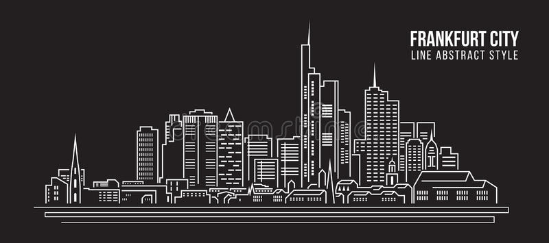
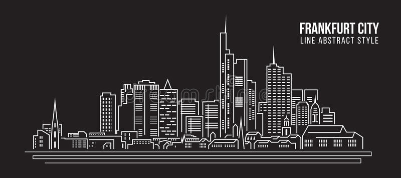

Backgound of my Mission
Besides ethnic Germans, there are many migrant groups present in the country, such as Turks and Poles. Germany has become an increasingly irreligious country, especially in the eastern portion of the country that was once part of the Soviet Union. The german people have long memories. Which means they don't often forget about how God helped them rebuild after WW2. I was able to teach a wide variatiy of people durring my time as a missionary.


Background Contiuned
About half of Germany’s population identifies itself as Christian, this population is primarily split between the Roman Catholic church and various Protestant denominations. Other aspects of German culture and history are preserved in museums and theater. Soccer is Germany’s most popular sport, with the national team having won the World Cup three times. The picture to the left is the area of my mission. I was able to serve in almost evey corner of the Frankfurt Germany mission. Everywhere from the north west to the middle east.